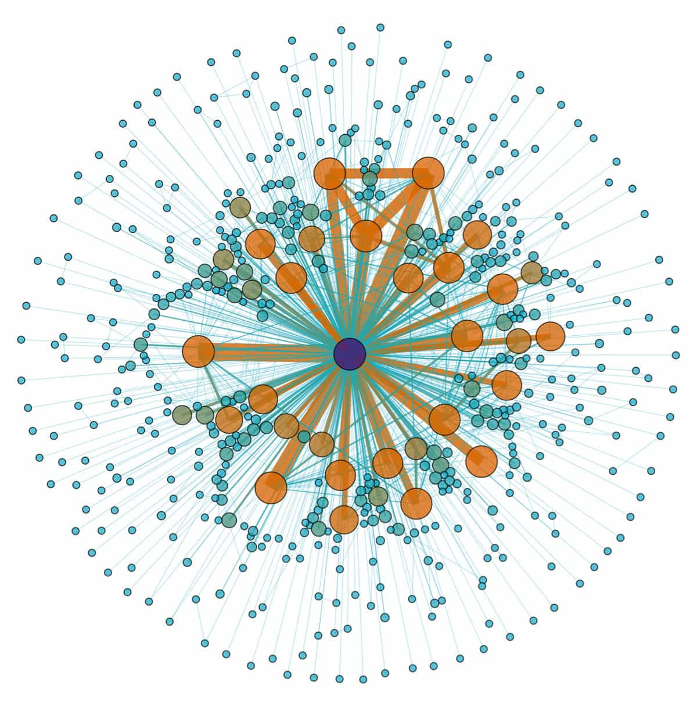

Daryush "Roosh" Valizadeh created ROK in October 2012. You can visit his blog at RooshV.com or follow him on Twitter and Facebook.


The mainstream media is in free fall collapse. Big outlets are laying off workers by the hundreds, the masses have low trust for politically correct articles, entire TV networks are getting pushed around by the likes of Donald Trump, crushing lawsuits are making their unethical practices obsolete, and their blatant hoaxes are being immediately called out instead of slipping under the radar. We are firmly in the eye of a turbulent storm that will lead to a new order for news.

Right now there is opportunity for “siren nodes” to start their own news outlet. A siren node is an individual who has built up enough trust within his network that he is fed scoops before it reaches the desks of mainstream journalists. All the big guys you know in the alt sphere, including myself, are siren nodes, a position that we can then leverage into forming a rudimentary news organization along the the likes of Charles J Johnson’s Got News. Once Johnson became an entrenched siren node, people began sending him daily tips without him having to seek them out.
The biggest problem with the indie news approach is that the profit margin is razor thin. News is the most expensive non-video content you can produce, and competition is incredibly high. If you’re just one hour late with your story then you will get scooped and miss out on tens of thousands of pages views, losing out on untold recognition and glory. If you want to do news, you must have cat-like readiness to the smallest perturbation of the news cycle and be more on-call than an emergency room doctor.
Another problem is that advertising alone will not be sufficient to keep indie news operations afloat, especially in a time where readers are getting annoyed at ads and seeking out blocking solutions. If the mainstream guys can’t make a profit, with their in-house MBAs trying to monetize even inch of content, it won’t be easy for the little guys either. This means that indie news outlets will certainly be required to use crowd-donation efforts (Kickstarter, Patreon, etc.) or sell their own products.

Old media will find it impossible to run a profit, but most outlets will continue to survive as pet projects for oligarchs who need to push out their agenda in the form of propaganda. One oligarch will buy Newspaper A to focus on his global warming agenda, another oligarch will buy another Newspaper B to aid his immigration agenda, and so on. These oligarchs will accept their money-losing outlets as merely the cost of doing business. What’s a $100 million a year loss for your own personal Pravda if it’s making you $1 billion a year through favorable government policies and modified consumer behavior?
You’ll always see the big names like Washington Post and Guardian exist, but their news desks will be gutted and replaced with cheap scribes who pump out Buzzfeed-like garbage with the occasional propaganda piece thrown in. It will be a race to the bottom in terms of quality, pushing additional readers away from these outlets to indie news, especially as the narrative continues to fade away. Oligarchs will have no love for the “news tradition,” putting thousands of veteran journalists out of a job to be replaced by low-wage millennials who believe that rape culture is the number one problem in the world. Most of the journalists who wrote attack pieces against me and Return Of Kings in February will be out of a job within five years.
Indie news sites will start niche, focusing on specific areas, and out-scoop or embarrass old media outlets that will find themselves in an increasingly small box of political correctness. Each indie news site will be relatively small, serving under 1 million users a month, and so there will be a logical push for them to merge and create outlets that look very similar to old media. Until then, expect indie news to be rough around the edges with typos and a lack of fancy multimedia content like custom charts and original photography.
The best example of how a large indie news outlet will look like is Info Wars. It started as small news site that piggybacked off of Alex Jones’ radio show but now pumps out 40 articles a day, much of it original reporting. They have a TV studio and a growing staff of journalists. Their main way of making money is not through advertising but through the sale of supplements that fit the overall conspiracy and survivalist theme of the news it offers. Within a few years, you will see several additional outlets that are similar to Info Wars in providing both print and video coverage.
Indie media outlets will compete head-on with a zombified old guard composed mostly of “true believers” to the social justice cause. Old media will be able to survive on brand recognition for many years until they get driven into the ground, and then the oligarchs will simply buy the indie media sites before destroying them, just like they did with Vice.
Another option I anticipate is for old media to create outlets that appear indie, such as the billionaire-owned The Intercept, but still share massive overlap with the establishment on umbrella issues like feminism and immigration. It’ll be increasingly important for you to know who owns the outlet you’re reading, and which agendas that owner has vested interests in.
As of now I have no intention of starting a news outlet that goes beyond the occasional news article you see here. Other than being a low profit business, the news business is too much of a grind. The news never stops, and you can’t even rest after a successful scoop because the insatiable public demands more. I’d be more inclined to get into news if I had an agenda that was monetarily tied to my business, such as if I was a globalist who needed massive amounts of cheap labor. I also don’t have a go-getter or fast-paced nature that is required for news operations.
https://twitter.com/rooshv/status/712072306647048192
I will move into focusing more on timeless content that doesn’t go stale after two days, and which can give value to the reader for years. Such “long tail” articles are also more friendly to advertising revenues and promotional tie-ins, but this means I will miss out on the daily action and fun of being a part of the hectic news cycle. There are always trade offs.
The news industry is being realigned as we speak. The old media will lose a lot of jobs and readership, but still maintain enough influence that it’s worthwhile to run for those with money-driven global agendas. Indie news will rise forth and cause a lot of pain to the establishment but remain niche until they mimic the old guard and form more professional outlets along the model of Info Wars. Either way, opportunity has arrived, and I have no doubt that ambitious men will take advantage of that. I just won’t be one of them.
This article was originally published on Roosh V.
Read Next: Roosh Destroys Media At Washington DC Press Conference